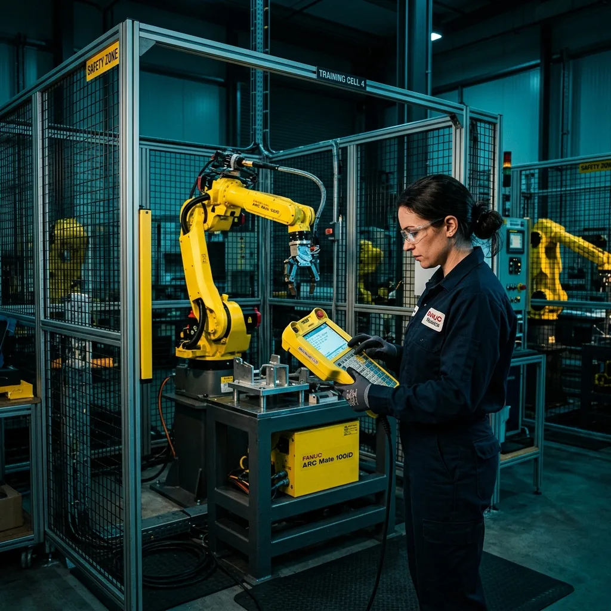

IA Generativa y ChatGPT en Robótica Industrial: Programación Avanzada de FANUC, ABB y KUKA

La adopción de modelos de lenguaje extenso (LLMs) como ChatGPT y Claude en el sector automotriz y de manufactura de Saltillo y Ramos Arizpe está transformando radicalmente la forma en que los programadores interactúan con brazos robóticos articulados. Ya no es necesario programar manualmente cada punto o línea de código desde cero; la IA Generativa en Robótica actúa como un multiplicador de la productividad.
🤖 ¿Cómo se aplica ChatGPT en Robótica Industrial?
Permite convertir requerimientos operativos explicados en texto ("Crea una matriz de paletizado de 4x3 con offset Z") en scripts ejecutables para controladores como FANUC R-30iB (Karel y HandlingTool), ABB IRC5/OmniCore (RAPID) y KUKA KRC4/KRC5 (KRL).
1. Generación de Algoritmos de Paletizado y Pick & Place
Programar un ciclo de paletizado o empaque implica calcular iterativamente desplazamientos X, Y, Z respecto a un marco de usuario (User Frame). La Inteligencia Artificial es extremadamente precisa para calcular estas estructuras algebraicas.
Ejemplo en Código ABB RAPID (Módulo de Paletizado Dinámico)
Al indicarle a ChatGPT la geometría de las cajas y la tarima, genera la estructura del módulo RAPID:
VAR robtarget pDestino;
pDestino := Offs(pOrigen, Columna*200, Fila*300, Cama*150);
MoveL pDestino, v1000, z50, tGripper;
SetDO do_GripperOpen, 1;
ENDPROC
Esto permite a los integradores acelerar la puesta en marcha de celdas de paletizado en plantas de estampación y ensamblaje.
2. Integración con Gemelos Digitales (ROBOGUIDE & RobotStudio)
Antes de tocar un robot real en la línea de producción, la simulación virtual es obligatoria. La IA apoya a los programadores en entornos de gemelo digital:
- Scripts Python en RobotStudio: ChatGPT genera automatizaciones en Python para importar modelos CAD, crear trayectorias sobre curvas 3D complejas y simular tiempos de ciclo sin intervención manual.
- Validación de Tiempos de Ciclo (Bottleneck Analysis): Analiza logs de simulación para recomendar velocidades óptimas en zonas de acercamiento y retracción.
3. Subrutinas de Recuperación de Errores y Manejo de Señales I/O
Cuando una celda robótica se detiene por una falla en la garra (Gripper Fault) o una pérdida de vacío, un mal programa requiere que un operador mueva el robot manualmente con el Teach Pendant.
ChatGPT ayuda a redactar rutinas de retorno a HOME automáticas (Home Return Routines) evaluando las condiciones de los sensores de zona de interferencia y cortinas de seguridad, minimizando el tiempo muerto (Downtime) de la línea.
⚠️ Recomendaciones de Seguridad al Usar IA en Robótica
PROTOCOLO DE PLANTAS INDUSTRIALES: Todo código generado por IA debe ser probado a velocidad reducida (T1 / 10% - 25%) con el botón de paro de emergencia (E-Stop) en mano durante la primera corrida física. Los límites de eje (Soft Limits) y las zonas de interferencia DCS (Dual Check Safety en FANUC / EPS en ABB) deben programarse de forma hardware/software independiente de la IA.
⚡ Robologix Automation: Integración de Celdas Robóticas y Capacitación
En Robologix Automation integramos celdas de soldadura, ensamble y paletizado con robots FANUC, ABB y KUKA en Saltillo, Ramos Arizpe y Arteaga. Capacitamos a ingenieros y técnicos con cursos prácticos presenciales y certificación STPS DC-3.
¿Buscas programar o integrar robots industriales en tu planta?
Contacta a nuestros expertos en robótica e ingeniería en Coahuila.
Chat Directo (+52 844 455 1869)